O JOGO DE CARTAS INWO
Muitos acreditam que as cartas realmente mostram acontecimentos relacionados com a implantação gradual da Nova Ordem Mundial.
O RPG "INWO — Illuminati New World Order", A Nova Ordem Mundial dos Illuminati, foi lançado em 1995 por Steve Jackson, que conhecia de antemão os acontecimentos que envolveriam os ataques de 11/9/2001 e os efeitos resultantes. Cartas do jogo apresentam detalhes de uma forma precisa demais para ser apenas uma coincidência. O jogo também revela os eventos planejados envolvendo o bioterrorismo, desastres combinados e a anarquia provocada nas grandes cidades, como forma de derrubar a velha ordem estabelecida. Se você alguma vez duvidou da existência de uma conspiração global, não pode duvidar mais.
Em 1990, Steve Jackson, inventor de RPGs, estava planejando seu mais novo jogo, que chamaria de "Illuminati: A Nova Ordem Mundial", ou "INWO", da abreviação em inglês. Jackson estava criando um jogo que iria reproduzir muito de perto o verdadeiro plano dos Illuminati de encaminhar o mundo para a Nova Ordem Mundial - também conhecido como o Reino do Anticristo. Conforme mostrado neste site três das cartas predizem os eventos de 11 de setembro, outras predizem corretamente os acontecimentos que estão adiante de nós no futuro, e mostram exatamente os últimos acontecimentos que a Bíblia afirma que acontecerão durante as últimas dores de parto que produzirão o Anticristo!
Como Steve Jackson conhecia o plano dos Illuminati tão precisamente? De fato, ele conhecia o plano tão bem que recebeu uma visita de surpresa do Serviço Secreto, que tentou fazer de tudo para tirá-lo de circulação e impedi-lo de lançar o jogo. Como vocês verão nos excertos do relato de Jackson sobre a batida, os agentes federais estavam muito interessados nos seus arquivos intitulados "Illuminist BBS". Leia os relatos de Jackson sobre a batida em http://www.sjgames.com/SS/:
"Na manhã do dia primeiro de março, [1990] sem aviso prévio, uma força dos agentes do Serviço Secreto - acompanhados pela polícia de Austin e por pelo menos um 'perito' civil da companhia telefônica - ocuparam os escritórios da Steve Jackson Games e começaram a examinar os computadores. A residência... do autor de GURPS Cyberpunk, também foi invadida. Muitos equipamentos foram apreendidos, incluindo quatro computadores, duas impressoras a laser, alguns disquetes soltos e considerável quantidade de hardware de computador. Um dos computadores era o que armazenava e rodava o Illuminati BBS."
A empresa, S. J. Games foi à Justiça e ganhou a ação, mas quase quebrou financeiramente. A investigação se concentrou em uma fraude supostamente cometida pela empresa por causa das atividades de hackers (invasores de sistemas de informática) e o fato de que a empresa promovia um boletim informativo destinado a hackers, intitulado "Prack". Entretanto, tudo isso é tão fraco que não faz o menor sentido; de fato, a acusação fazia tão pouco sentido que o juiz concedeu a Steve Jackson Games 50 mil dólares de indenização, mais 250 mil dólares de honorários advocatícios. Isso é muito dinheiro do contribuinte para pagar por um caso estúpido e sem sentido algum!
No entanto, isso enfatiza o fato que o governo iluminista dos EUA, e o Serviço Secreto, chefiado na época por George Bush (pai) estava preocupado com alguma coisa que a S. J. Games estava prestes a fazer, e formulou um motivo para invadir os escritórios da empresa e apreender seus equipamentos. Depois que você analisar este material, acreditará, que a verdadeira razão pela qual o Serviço Secreto invadiu a S. J. Games foi para tirá-los de circulação, de modo que não lançassem o jogo "Illuminati - A Nova Ordem Mundial" (INWO), já que revelava muito do plano que ainda estava anos adiante no tempo. Veja as cartas e seja você o juiz.
 "Carta Ataque Terrorista" - Esta carta é uma das mais chocantes de todas, especialmente à luz do fato que esse jogo chegou às lojas especializadas em 1995! Como Steve Jackson podia saber que as Torres Gêmeas do World Trade Center seriam atacadas? De fato, a carta reproduz precisamente o ataque ao World Trade Center em grande detalhe. Essa carta reproduz vários fatos de 11/9/2001 - uma carta criada em 1995! A gravura mostra claramente:
"Carta Ataque Terrorista" - Esta carta é uma das mais chocantes de todas, especialmente à luz do fato que esse jogo chegou às lojas especializadas em 1995! Como Steve Jackson podia saber que as Torres Gêmeas do World Trade Center seriam atacadas? De fato, a carta reproduz precisamente o ataque ao World Trade Center em grande detalhe. Essa carta reproduz vários fatos de 11/9/2001 - uma carta criada em 1995! A gravura mostra claramente:
- Que uma torre seria destruída primeiro; a gravura reproduz exatamente o momento entre o ataque à primeira e à segunda torre.
- A carta reproduz exatamente que o local do impacto é uma certa distância do topo das Torres Gêmeas. O avião atingiu a primeira torre nessa mesma área, aproximadamente. Como Steve Jackson podia saber isso?
- A carta reproduz com exatidão a liderança dos Illuminati, mostrando um dos seus símbolos, pois no lado esquerdo da figura aparece uma pirâmide com o olho-que-tudo-vê no centro.
- A legenda no alto corretamente identifica os perpetradores do ataque como "terroristas".
 "Carta Pentágono" - Quando vi esta carta, imediatamente depois de ter visto a figura das Torres Gêmeas, meu sangue gelou! A menos que alguém tivesse conhecimento prévio do plano dos Illuminati, não haveria nenhuma hipótese de poder criar gravuras em 1995 que reproduzem precisamente o desdobrar dos acontecimentos de 11/9/2001! O Pentágono aparece em chamas; sabemos que, segundo se alega, um avião caiu em uma das alas do Pentágono, que foi quase completamente destruída pelas chamas. Todavia, o restante do Pentágono ficou fora de perigo e suas funções e atividades continuaram sem nenhuma interrupção.
"Carta Pentágono" - Quando vi esta carta, imediatamente depois de ter visto a figura das Torres Gêmeas, meu sangue gelou! A menos que alguém tivesse conhecimento prévio do plano dos Illuminati, não haveria nenhuma hipótese de poder criar gravuras em 1995 que reproduzem precisamente o desdobrar dos acontecimentos de 11/9/2001! O Pentágono aparece em chamas; sabemos que, segundo se alega, um avião caiu em uma das alas do Pentágono, que foi quase completamente destruída pelas chamas. Todavia, o restante do Pentágono ficou fora de perigo e suas funções e atividades continuaram sem nenhuma interrupção.
Não é a mesma situação reproduzida na figura? A carta mostra que o fogo está queimando com toda força no centro do jardim interno do Pentágono, mas o restante do prédio está a salvo o suficiente para que suas atividades continuem sem interrupção!
Assim, essas duas cartas mostram literalmente os dois choques de 11 de setembro: contra as Torres Gêmeas primeiro e contra o Pentágono.
Esse tipo de precisão seis anos antes dos ataques só é possível se alguém conhecesse o Plano dos Illuminati com grande detalhe.
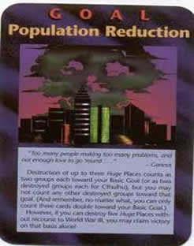"Carta Controle da População" - Mesmo que no alto desta carta esteja escrito, "Controle da População", a cena apresentada mostra claramente as Torres Gêmeas atacadas. Com as Torres Gêmeas sob ataque, e o topo delas escondido pela fumaça preta, o New York Empire State é novamente o edifício mais alto na cidade! Além disso, observe que a fumaça forma a cara de um demônio. Isso é altamente significativo por diversas razões:
Durante a filmagem que mostrava as Torres Gêmeas em chamas, várias câmeras captaram o que parecia ser a cara de um demônio na fumaça. Embora muitas pessoas não levaram isso em conta, dizendo ser mera coincidência, dois ex-satanistas declararam que essas imagens mostradas na televisão, que aquelas caras pareciam-se exatamente com os demônios que eles viam nos rituais em que demônios se manisfestavam materialmente nesta dimensão. Cisco Wheeler disse que alguns dos demônios mais poderosos no reino de Satanás eram conhecidos como Demônios do Fogo; eram para esses demônios que os povos antigos - incluindo os israelitas apóstatas - sacrificavam seus filhos a Moloque. O aparecimento da cara desses demônios pode ser a prova daquilo que tenho dito - o ataque às Torre Gemeas do World Trade Center foi um Ritual de Sacrifício de Fogo perpetrado pelos Illuminati.
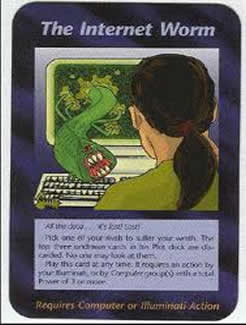Vermes na Internet — A parte inferBior da carta diz: "Todos os dados... estão perdidos! Perdidos! Escolha um de seus rivais para sofrer sua ira... Jogue esta carta a qualquer momento. Ela requer uma ação de seus Illuminati ou de grupo(s) Computador com um Poder total de 3 ou mais."
Você consegue imaginar? Os vírus de computador foram planejados pelos Illuminati, provavelmente para fazer com que os proprietários de computadores que se apaixonaram pela Internet aceitem novos controles do governo. Os governos já puseram em funcionamento novas regras para o uso da Internet ou propuseram essas regulamentações. Uma vez que a Internet é um dos últimos meios restantes de comunicação global verdadeiramente livres, o governo está muito interessado em obter o controle. Qual a melhor forma de obter tal controle regulador do que utilizar a técnica clássica do embate dialético: "O conflito controlado produz mudança controlada"? Esse processo também é chamado às vezes de "Criar um problema e propor a solução (dos Illuminati)".
Se você pesquisar sobre dois projetos de lei, o Stop Online Piracy Act (pare com a pirataria on-line, em tradução livre), conhecido como Sopa, e "Protect IP Act" (ato para proteção da propriedade intelectual), chamado de Pipa, que estavam no Congresso dos Estados Unidos, verá que eles querem o total domínio sobre a internet que é o maior meio de comunicação livre do planeta. Com estas leis qualquer site pode ser fechado apenas por ter conexão com outro site suspeito de pirataria (leia-se conteúdo suspeito o que eles não querem que você saiba) a pedido do governo dos EUA ou dos geradores de conteúdo.
| 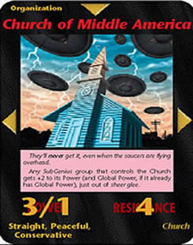 | Church of Middle America (Igreja da América Central): Aqui é mostrado um arrebatamento feito por extraterrestres. Uma sugestão de arrebatamento por alienígenas no fim do mundo. Veja neste site em: ETs. |
| 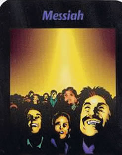 | Messiah: E essa, é o retorno do messias: Fala que o Messias irá se apresentar ao mundo, (todas as pessoas do mundo irão conseguirão ouvi-lo).Para entendê-la completamente você deve ler o livro: Quando Ele Voltar de Ricky Medeiros. Provavelmente a história do livro é o significado desta carta. |
| 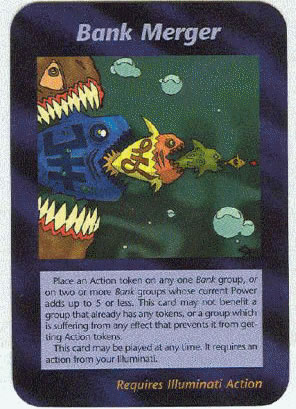 | Bank Merger (União/Fusão dos Bancos): O plano para a Nova Ordem Mundial é a de criar um único sistema mundial para controlar tudo. Ou seja a idéia é levar alguns bancos a falência e fazer a fusão entre outros até existir somente uma única moeda mundial. Então quem não tiver a marca da besta não poderá vender ou comprar. |
| 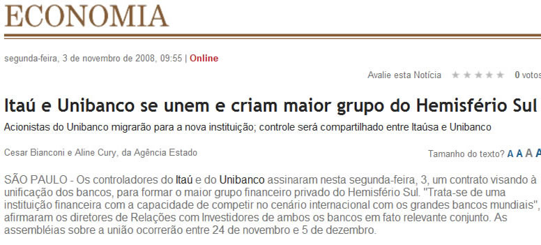 |
| 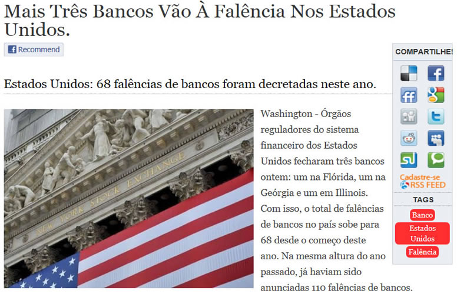 |
Manipulaçã da economia mundial
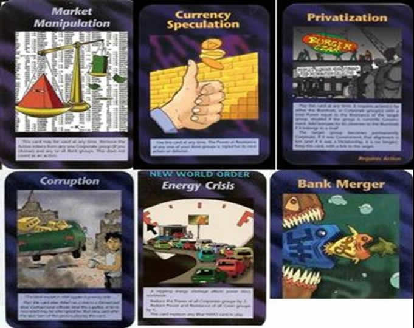
| 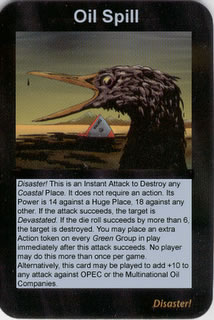 | 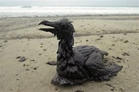 | Carta de derramamento de óleo Illuminati Card Game prova que o derrame de petróleo não foi todo incidente foi planejado . |
| 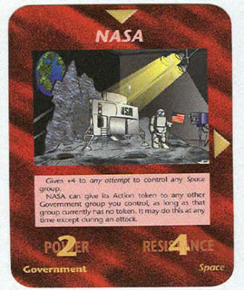 | 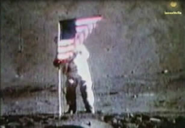 | Imaginar o tamanho de tanta encenação se torna até hilário! |
Há diversas outras cartas que você pode encontrar pela internet em sites mais completos e específicos sobre o assunto. Vale a pena pesquisar! Fica a dica.